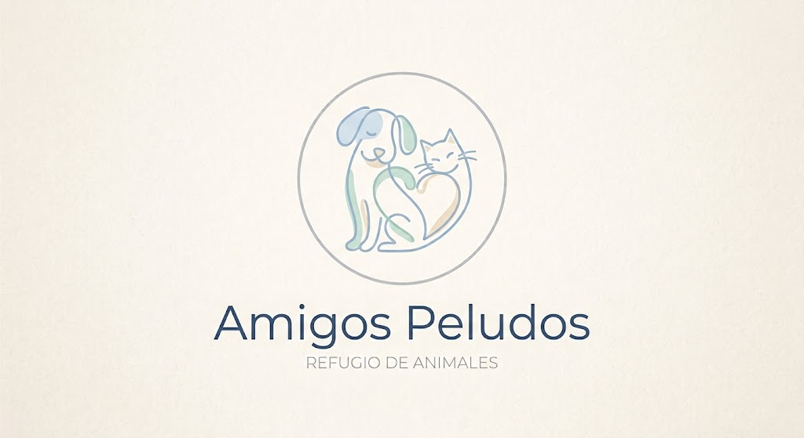

Amigos Peludos es una organización dedicada al cuidado y protección de animales domésticos. Su objetivo es atender a animales que se encuentran en situación de vulnerabilidad, garantizar su bienestar y facilitar que puedan encontrar una familia adoptiva responsable.

Número de teléfono: +34 676 767 676
Correo Electrónico: Amigos_Peludos@gmail.com
Ubicación: Parque Mendibil, s/n, 20302 Irun, Gipuzkoa